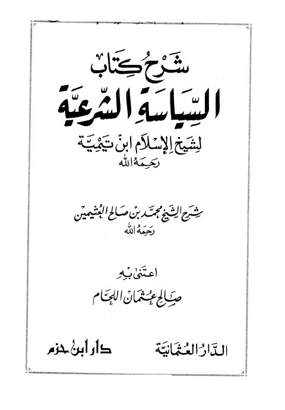

Downloads need an internet connection.
شرح السياسة الشرعية ابن تيمية
Authors: محمد بن صالح العثيمين
Editors: صالح عثمان اللحام
Publishers: دار ابن حزم
**▫️ العنوان: شرح السياسة الشرعية ابن تيمية** ▪️ المؤلف: #محمد_بن_صالح_العثيمين ▫️ المحقق: #صالح_عثمان_اللحام ▪️ الناشر: #دار_ابن_حزم ▫️ تاريخ النشر: 1425هـ -2004م ▪️ بلد النشر: بيروت، #لبنان ▫️ الطبعة: 1 ▪️ عدد الأجزاء: 1 ▫️ الصفحات: 486 ▪️ نوع الوعاء: #كتاب ▫️ التصنيف الرئيسي: #العقيدة_والمذاهب_والأديان ▪️ التصنيف الفرعي: #الحكم_والإمامة ۪